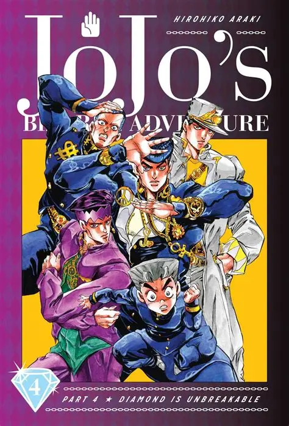
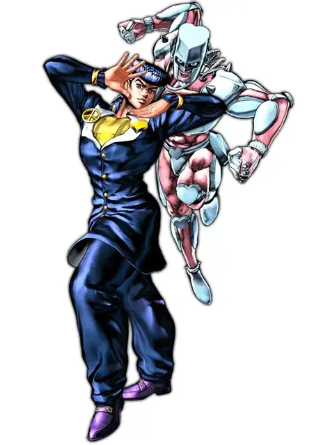
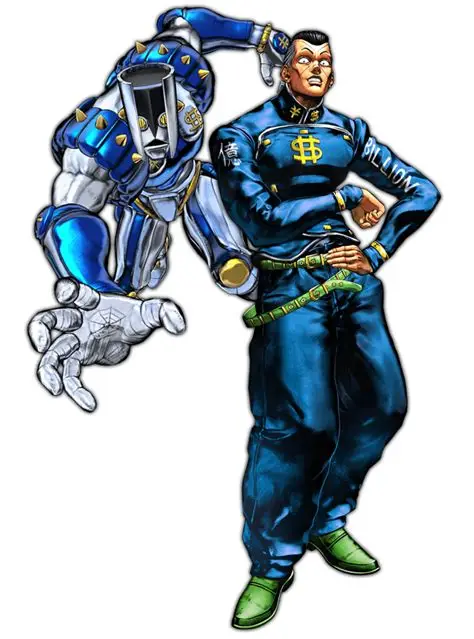
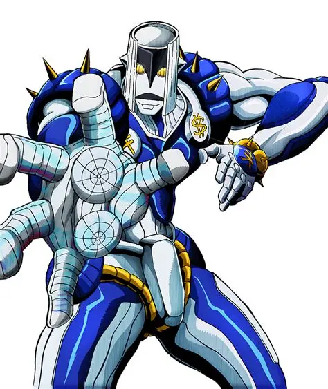
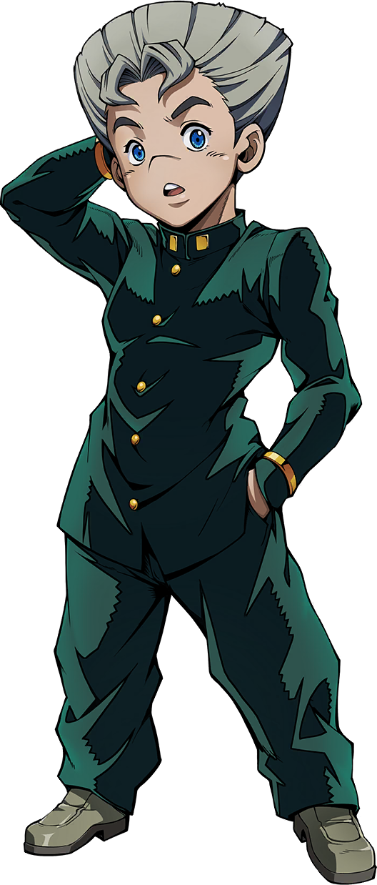
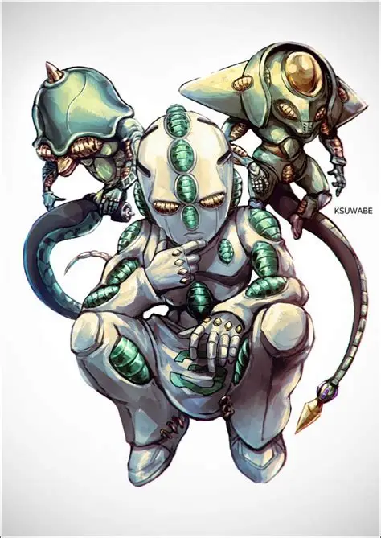
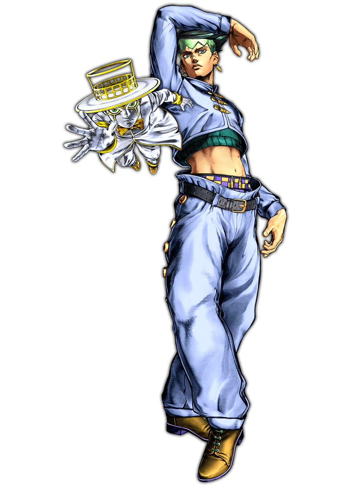
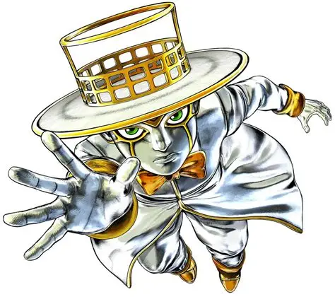
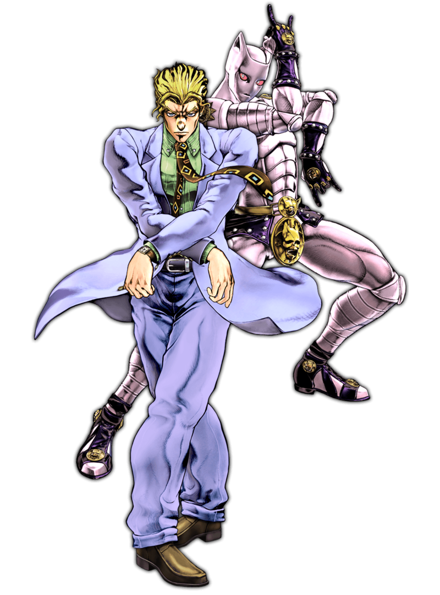

Parte 4: Diamond is Unbreakable

Sinopsis
En la tranquila ciudad de Morioh, Josuke Higashikata y sus amigos investigan una serie de sucesos extraños relacionados con Stands. Detrás de todo hay un asesino en serie con un oscuro secreto.
🎵 Openings
| N.º | Canción | Artista | Año |
|---|---|---|---|
| 1 | Crazy Noisy Bizarre Town | THE DU | 2016 |
| 2 | chase | batta | 2016 |
| 3 | Great Days | Karen Aoki y Daisuke Hasegawa | 2016 |
▶ Buscar el opening en YouTube
Opening 1: Crazy Noisy Bizarre Town
Opening 2: chase
Opening 3: Great Days
Personajes
| Imagen | Nombre | Rol | Descripción | Stand |
|---|---|---|---|---|
 | Josuke Higashikata | Protagonista | Estudiante de instituto. |  Crazy Diamond |
 | Okuyasu Nijimura | Aliado | Amigo leal de Josuke. |  The Hand |
 | Koichi Hirose | Aliado | Joven que mejora con el tiempo. |  Echoes |
 | Rohan Kishibe | Aliado | Mangaka excéntrico. |  Heaven's Door |
 | Yoshikage Kira | Antagonista | Asesino en serie que busca vivir en calma. |  Killer Queen |
Sistema de poder (pulsa para desplegar)
Los Stands suelen tener habilidades más extrañas y cotidianas. La historia es más cercana al misterio y a la vida diaria que las partes anteriores.